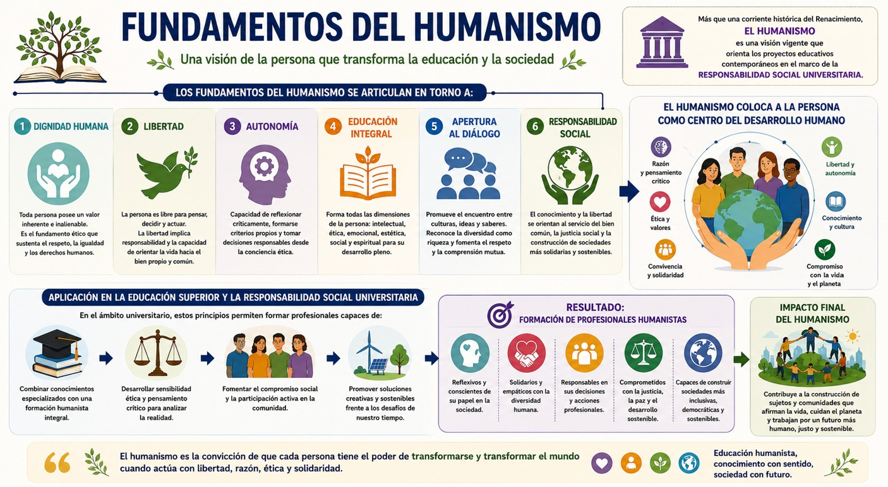
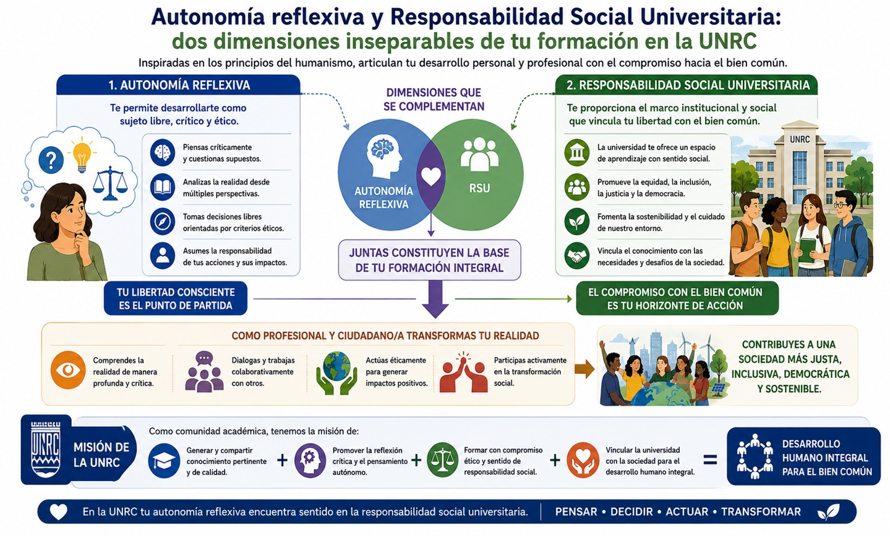

Finalmente, el tercer saber, relacionado con la autonomía reflexiva con perspectiva humanista, sitúa a la persona como centro del proceso educativo, reconociendo su dignidad, libertad y capacidad para actuar éticamente en comunidad. Inspirado en los fundamentos del humanismo y en los principios de la responsabilidad social universitaria, este enfoque busca que las y los estudiantes desarrollen no solo competencias técnicas o cognitivas, sino también una conciencia ética y social que le permita asumir compromisos con su entorno y con la construcción de sociedades más inclusivas, solidarias y sostenibles.
Fundamentos del Humanismo
¿Recuerdas que el lema de nuestra universidad es “Otro modo de ser humano y libre. Otro modo de Ser”? Esto se debe a que nuestra formación universitaria busca que nosotras y nosotros seamos seres humanos comprometidos con las necesidades de nuestras sociedades y comunidades. Es por eso que en este bloque revisaremos por qué es tan importante pensar desde y para el ser humano. Revisemos ahora qué es el humanismo y cuáles son sus fundamentos.
El humanismo constituye una de las corrientes intelectuales más influyentes en la historia de Occidente y uno de los fundamentos filosóficos más importantes de los modelos educativos contemporáneos centrados en la persona. Surgió durante el Renacimiento italiano entre los siglos XV y XVI, el humanismo representó una transformación profunda en la manera de comprender al ser humano, su lugar en el mundo y sus posibilidades de desarrollo. Frente a las visiones que subordinaban completamente la existencia humana a órdenes externos o predeterminados, los humanistas destacaron la capacidad de las personas para construir su propio destino mediante el ejercicio de la razón, la libertad, la educación y la vida en comunidad.
La relevancia actual del humanismo radica en que ofrece una concepción integral de la persona, entendida no únicamente como un sujeto que adquiere conocimientos técnicos, sino como un ser capaz de reflexionar sobre sí mismo, actuar éticamente, convivir con otros y participar activamente en la construcción de una sociedad más justa. Esta perspectiva resulta especialmente pertinente para la educación superior contemporánea, específicamente en nuestra casa de estudios, donde la formación profesional debe complementarse con el desarrollo de una conciencia crítica, social y humanista.
Uno de los pilares centrales del humanismo es la afirmación de la dignidad intrínseca de toda persona. Durante el Renacimiento, autores como Giovanni Pico della Mirandola defendieron la idea de que el ser humano posee una condición singular porque no está completamente determinado por una naturaleza fija, sino que cuenta con la capacidad de configurarse a sí mismo mediante sus decisiones y acciones. Cordua señala que Pico concibe al ser humano como un ser libre capaz de elegir quién quiere llegar a ser, destacando la amplitud de sus posibilidades de desarrollo. (Cordua, 2013).
Esta concepción implica reconocer que todas las personas poseen un valor inherente que no depende de su origen social, condición económica, género, nacionalidad o cualquier otra característica particular. La dignidad humana constituye así el fundamento ético de principios contemporáneos como los derechos humanos, la igualdad de oportunidades, la inclusión social y el respeto a la diversidad.
Otro de los fundamentos esenciales del humanismo es la libertad. Para los humanistas renacentistas, la persona no es un simple producto de circunstancias externas, sino un sujeto capaz de reflexionar, decidir y orientar su propia vida. La libertad no se entiende únicamente como ausencia de restricciones, sino como la capacidad de actuar responsablemente y construir proyectos de vida significativos.
De esta idea surge el concepto de autonomía, entendido como la facultad de pensar por cuenta propia, cuestionar creencias establecidas y tomar decisiones fundamentadas. La educación humanista busca precisamente fortalecer esta capacidad reflexiva, permitiendo que las personas desarrollen criterios propios frente a los desafíos que enfrentan en su vida personal y social.
En el ámbito universitario, la autonomía reflexiva implica que las y los estudiantes sean capaces de analizar críticamente la realidad, evaluar distintas perspectivas y asumir posiciones éticas fundamentadas. La formación profesional deja entonces de consistir únicamente en la adquisición de conocimientos especializados para convertirse en un proceso de construcción integral de la persona.
Así, el humanismo otorga un papel central a la educación como medio para desarrollar las potencialidades humanas. Los estudios humanísticos promovidos durante el Renacimiento incluían disciplinas como la gramática, la retórica, la poesía, la historia y la filosofía moral, orientadas a cultivar las capacidades intelectuales, éticas y expresivas de los individuos.
Más allá de la transmisión de información, la educación humanista busca formar personas capaces de comprender el mundo, dialogar con otros, actuar responsablemente y participar en la vida pública. Cordua (2013) destaca que las humanidades han sido valoradas históricamente porque contribuyen a la formación de personalidades autónomas, reflexivas y abiertas al desarrollo de múltiples capacidades.
Esta concepción mantiene plena vigencia en el siglo XXI. En un contexto caracterizado por la aceleración tecnológica y la especialización profesional, el humanismo recuerda la importancia de cultivar dimensiones éticas, culturales, emocionales y sociales que permitan orientar el conocimiento hacia fines verdaderamente humanos.
Además, los humanistas renacentistas consideraban que el conocimiento debía trascender fronteras culturales, políticas y religiosas para contribuir al desarrollo de toda la humanidad, de modo que, el ideal humanista buscaba una circulación libre de las ideas, las obras y las experiencias más valiosas producidas por distintos pueblos y épocas. Es por ello que, otro rasgo distintivo del humanismo es su vocación universalista. Esta apertura favorece el diálogo intercultural y el reconocimiento de la diversidad como una fuente de enriquecimiento mutuo. Desde una perspectiva humanista, ninguna persona ni comunidad posee por sí sola todo el conocimiento necesario para comprender la complejidad del mundo. Por ello, la formación humanista promueve la escucha, el respeto y la capacidad de aprender de otras y otros.
En la actualidad, este principio adquiere especial relevancia frente a desafíos globales como el cambio climático, las migraciones, las desigualdades sociales y los conflictos culturales, los cuales requieren cooperación, solidaridad y diálogo entre distintos actores y saberes.
Ahora, es importante decir que la educación humanista no se limita al desarrollo individual. También implica asumir responsabilidades respecto al bienestar colectivo y la construcción de sociedades más justas. La libertad y la autonomía no son concebidas como prácticas aisladas, sino como capacidades que deben ejercerse en relación con otras personas y con la comunidad. Esta dimensión ética conecta directamente con los principios de la Responsabilidad Social Universitaria que revisaste en la UCA pasada sobre desarrollo sostenible, equidad y responsabilidad social. Es de esa manera que, la formación profesional adquiere sentido cuando el conocimiento se orienta hacia la solución de problemas sociales, la promoción de la justicia, la protección del medio ambiente y la defensa de la dignidad humana. Desde esta perspectiva, el humanismo impulsa una ciudadanía activa y comprometida con el desarrollo sostenible, capaz de reconocer las consecuencias sociales de sus decisiones y de participar en la transformación positiva de su entorno.
En suma, los fundamentos del humanismo se articulan en torno a la dignidad humana, la libertad, la autonomía, la educación integral, la apertura al diálogo y la responsabilidad social. Más que una corriente histórica limitada al Renacimiento, el humanismo constituye una visión de la persona que continúa orientando los proyectos educativos contemporáneos en el marco de la responsabilidad social universitaria. En el ámbito universitario, estos principios permiten formar profesionales capaces de combinar conocimientos especializados con sensibilidad ética, compromiso social y pensamiento crítico. De este modo, el humanismo contribuye a la construcción de sujetos reflexivos, solidarios y responsables, preparados para afrontar los desafíos complejos de nuestro tiempo y participar activamente en la construcción de sociedades más inclusivas, democráticas y sostenibles. El siguiente diagrama te explica los fundamentos de humanismo:

- Cordua, Carla (2013). El Humanismo, en Revista Chilena de Literatura, septiembre, Núm. 84, 9-17.
Te recomendamos ver este video para profundizar sobre este tema:
Autonomía reflexiva y Responsabilidad Social Universitaria.
Ahora veremos cómo y por qué la autonomía reflexiva constituye una de las expresiones más importantes del humanismo contemporáneo aplicado a la educación superior. Desde la perspectiva, de la autonomía reflexiva la persona no es concebida como un simple receptor de conocimientos ni como un agente que reproduce mecánicamente normas y procedimientos, sino como un sujeto capaz de pensar críticamente, deliberar sobre sus acciones y asumir responsablemente las consecuencias de sus decisiones. La autonomía implica la capacidad de construir criterios propios a partir de la reflexión, el diálogo y la evaluación crítica de la realidad. Sin embargo, esta autonomía no debe entenderse como individualismo o aislamiento, sino como una libertad orientada éticamente hacia la convivencia y el bien común. En este sentido, la formación universitaria tiene la responsabilidad de desarrollar en el estudiantado la capacidad de analizar problemas complejos, cuestionar supuestos, reconocer distintas perspectivas y actuar con responsabilidad frente a los desafíos sociales.
Desde el enfoque humanista, la autonomía reflexiva se vincula estrechamente con la dignidad humana. Cada persona posee la capacidad de comprender su realidad, otorgarle significado y participar activamente en su transformación. Por ello, nuestra universidad no puede limitarse a la transmisión de información técnica o profesional, sino que debemos propiciar procesos de reflexión crítica que te permitan construir proyectos de vida con sentido ético y compromiso social. Esta idea coincide con la tradición universitaria que reconoce el valor del pensamiento crítico como condición indispensable para el desarrollo de sociedades democráticas y pluralistas. Así, nuestra universidad, por tanto, busca convertirse en un espacio donde el conocimiento se articule con la reflexión sobre las consecuencias humanas, sociales y ambientales de las acciones individuales y colectivas.
Como viste la UCA pasada, la Responsabilidad Social Universitaria (RSU) surge precisamente como una ampliación de esta visión humanista de la educación. Más que una actividad complementaria de extensión o servicio comunitario, la RSU constituye una orientación ética que atraviesa todas las funciones universitarias: docencia, investigación, gestión institucional y vinculación con la sociedad. De acuerdo con Beltrán-Llavador, Íñigo-Bajo y Mata-Segreda (2014), la universidad tiene la responsabilidad de contribuir al desarrollo humano integral mediante la promoción de la justicia, la solidaridad y la equidad social, respondiendo a los problemas y necesidades de la sociedad desde sus funciones sustantivas. De modo que, nuestra casa de estudios debe ejercer un liderazgo social capaz de generar conocimiento pertinente y de impulsar transformaciones orientadas al bienestar colectivo.
En ese sentido, la relación entre autonomía reflexiva y responsabilidad social universitaria es profunda y complementaria. La autonomía reflexiva proporciona las bases para que las personas puedan actuar libremente desde criterios éticos propios y la RSU ofrece el horizonte colectivo hacia el cual esa autonomía debe orientarse. Nuestra universidad como socialmente responsable no busca formar únicamente profesionales competentes en términos técnicos, sino ciudadanas y ciudadanos capaces de reconocer los impactos sociales, culturales y ambientales de sus decisiones. Así pues, la responsabilidad social implica una comprensión crítica de la propia profesión y de su papel en la construcción de una sociedad más justa y sostenible. La autonomía deja de ser un ejercicio individual para convertirse en una práctica de corresponsabilidad con los demás y con el entorno.
Desde esta perspectiva, la RSU también supone una concepción renovada de la autonomía universitaria. Por ejemplo, Javier Villar sostiene que la autonomía no consiste únicamente en la capacidad institucional de autogobernarse, sino en la facultad de tomar decisiones responsables considerando las necesidades y demandas de los diversos actores sociales. Una universidad autónoma es aquella que asume críticamente sus procesos y evalúa permanentemente sus impactos educativos, sociales y ambientales, manteniendo un diálogo constante con la comunidad a la que sirve. Así, la autonomía institucional, por tanto, se fortalece cuando se ejerce con responsabilidad y transparencia.
De igual manera, la formación de la autonomía reflexiva exige metodologías educativas coherentes con los principios de la responsabilidad social. Villar señala que la educación ética y socialmente responsable requiere experiencias de aprendizaje que te vinculen con problemas reales de tu comunidad, favoreciendo la reflexión sobre las consecuencias de tus propias acciones y la construcción de soluciones colaborativas. La metodología de aprendizaje-servicio, por ejemplo, permite que desarrolles conocimientos profesionales mientras participan activamente en procesos de transformación social. De esta manera, la autonomía se construye en interacción con otros, mediante el diálogo, la cooperación y la participación comunitaria. Es por ello, que la formación de las UCA transversales procura mantenerte en contacto con los problemas que afectan a tu comunidad.
En síntesis, la autonomía reflexiva y la Responsabilidad Social Universitaria representan dos dimensiones inseparables de tu formación en esta casa de estudios inspirada en los principios del humanismo. La primera permite que te desarrolles como sujeto libre, crítico y capaz de orientar éticamente tus acciones; la segunda te proporciona el marco institucional y social que vincula esa libertad con el compromiso hacia el bien común. Juntas constituyen la base para formarte como un profesional y ciudadano que no sólo comprenda la realidad, sino que participe activamente en su transformación, contribuyendo a la construcción de una sociedad más justa, inclusiva, democrática y sostenible. En la UNRC tenemos la misión de articular conocimiento, reflexión crítica, compromiso ético y responsabilidad social en favor del desarrollo humano integral, en el siguiente diagrama podrás visualizar el papel de la autonomía reflexiva y la RSU:

- Villar, Javier. Responsabilidad Social Universitaria: nuevos paradigmas para una educación liberadora y humanizadora de las personas y las sociedades, REDIVU – Red Latinoamericana de Compromiso Social y Voluntariado Universitario – Biblioteca Virtual.
- Beltrán-Llevador José, Íñigo-Bajo, Enrique y Mata-Segreda Alejandrina (2014). En La responsabilidad social universitaria, el reto de su construcción permanente. Revista Iberoamericana de Educación Superior, N. 14, V., 3-18.
Te recomendamos ver estos videos para profundizar sobre este tema: